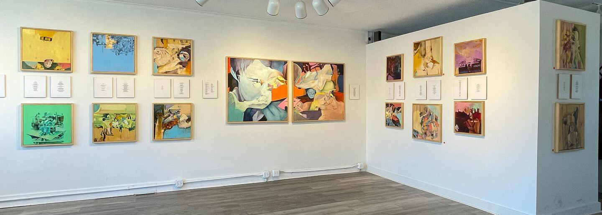
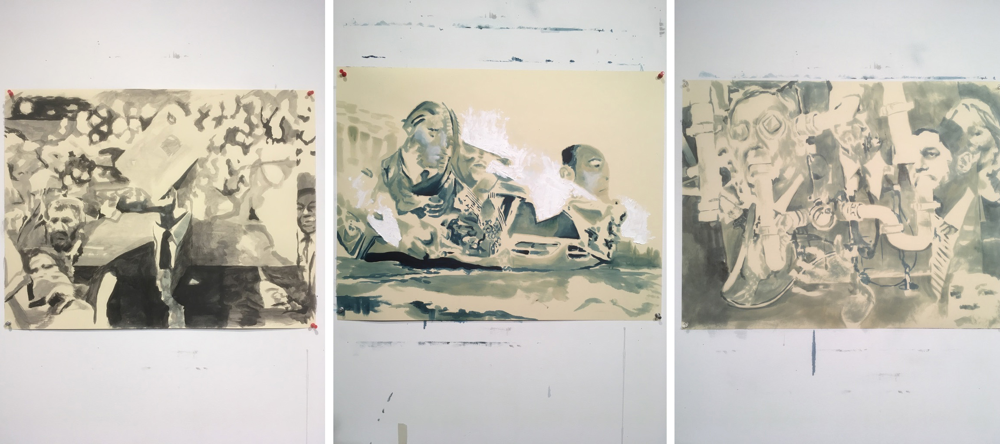

The Unsettling of Mary Henry
(2025 — Present)ABOUT THE WORK
These paintings were initially composed by superimposing stills from Herk Harvey's 1962 film Carnival of Souls. The film uses a haunting, dreamlike framework to explore what it means to be emotionally and physically cut off from humanity. It's core themes of profound alienation, mortality, and psychological dissociation felt particularly resonant as I worked on these painitngs in my studio days after the highly publicized ICE raid on our building that kicked off Operation Metro Surge and laid seige to the Twin Cities in the months that followed.
This series is ongoing.

A Wake in the Current
(2021 — 2024)ABOUT THE WORK
These paintings are from a project that began amid pandemic isolation as a socially distanced collaboration with writer Kyle Feldman. I would paint and he would write and then I’d paint something prompted by what he’d just written and he would write something prompted by what I had just painted and so on. The project is the subject of an exhibition in April 2024 at the Viewpoint Gallery.
Check out the virtual gallery, including the paintings and poems.

Compound Fractures
(2015 — Present)
SOME BACKGROUND
According to a 2012 study published in the Journal of Neuroscience, reactivation of information stored in the brain simultaneously strengthens access to and distorts the associated memories. Every time an event is recalled it is altered in some way and those alterations become part of the memory.
Similar to unfired clay that acquires fresh impressions every time it’s handled, the simple act of remembering alters the memory at its source, rendering it (presumably) less accurate with each occurrence.
In other words, the more you remember something, the less faithful it becomes.
This dispassionately ironic twist of nature can seem alternately cruel and charitable toward its subjects and their experience. Yet the affects of the phenomenon extend outward beyond the synapses, rippling through the stories we tell and the lessons derived at each retelling.
These findings and their implications have been a source of personal fascination for some time and are an underlying theme throughout this collection of work.
THE WORK
These paintings are about the distortion of memory over time and how that must affect our sense of identity on all levels—personal, cultural, spiritual, and so on.
Though composed indivdually, they are intended as pieces of a larger whole, with some designed to fit edge-to-edge in linear continuity—as if conjured by one another.
The compositions are drawn from projections of randomly captured and superimposed film stills. Overlaying the images fractures recognizable objects (and subjects) into new, abstract forms. However remnants of the original images persist, redefined in both form and context by the convergent imagery.
Not only is this process conceptually and physically reminiscent of memory distortion, it’s visually illustrative as well. The final paintings, with their prismatic approach to color and reality-adjacent treatment of bodies in space, attempt to visualize our quietly tumultuous struggle to preserve moments in time. Even if, in our desperation to hold on to them, those memories slowly give way to imagination.
Selections from this series are currently on display at Tongue in Cheek in St. Paul, MN.
Unflattering Portraits of Men in Suits
(2017)ABOUT THE WORK
These paintings, which were created in the first several months of 2017, derogatorily combine images of prominent political figures with random objects. They are an admittedly juvenile response to incomprehensibly stupid press conferences and similar acts of performative debasement.
This is a series of works on paper, each created within a single session and rendered in oil. The visual components are photographs from the previous day's news cycle, superimposed and painted via projection.

Pilgrims
Pilgrims is a series of paintings about establishing familiarity in a foreign place. By interweaving familiar imagery with obscure forms and relying on the viewer’s inclination to apply narrative, artist Jon Reischl creates a sort of harmony from seemingly discordant parts.
Initial exhibition August 2 – September 8, 2012 at Burnsville Center for Performing Arts (Burnsville, MN).
Settlers
Paintings examining the nature of memory and the presence of mind through a cast of enigmatic characters and improbable settings. Mixed-media artist Jon Reischl interweaves recognizable imagery and obscure forms to create paintings that are simultaneously comforting in their familiarity and disquietingly foreign.

Initial exhibition April 18 – May 23, 2014 at The Phipps Center for the Arts (Hudson, WI).
An Evening of the Odds
The show's title, An Evening of the Odds, with it's glib multi-entendre, is consistent with Reischl's fondness for wordplay, but also suggestive of the sense of resigned struggle present in much of his work. His subjects often seem to be, in one way or another, at odds with their surroundings, yet also at relative ease, as if to imply that there is contentment to be found amongst the chaos. Reischl's work covers familiar thematic ground, exploring the role of Creator by offering up the interpretive reigns to his audience. And in the case of his Variable Title paintings, blatantly encouraging them to physically interact with the pieces.
Initial exhibition March 6th - April 6th, 2010 at Nicademus Art (St. Paul, MN).
Variable Title Paintings
"The live being recurrently loses and reestablishes equilibrium with his surroundings. The moment of passage from disturbance into harmony is that of intensest life."
— John DeweyEach of these paintings features a device in the frame which allows the viewer to select a different title, this shifting of context effectively alters what the viewer sees while the image itself remains unchanged.
Private Commissions
These are paintings that were commissioned privately and were created independent of any larger body of work.